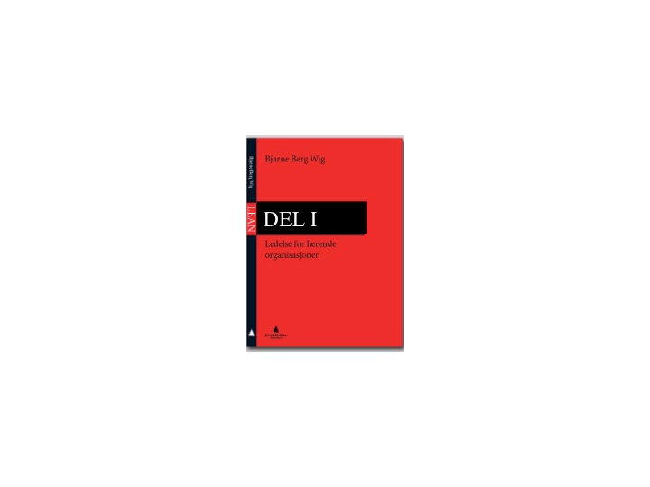

LEAN – Ledelse for lærende organisasjoner
Ressurser til boka.
LEAN Ledelse for lærende organisasjoner
Lean is about creating products and services with the most value and least possible loss of resources by focusing on flow, transparent processes and continues improvement.
Lean is fairly simple principles and methods. This book and related digital resources are designed for breakthroughs for Lean in our way: The goal is a turning point where working with continuous improvement and learning in the workplace becomes commonplace, and where all managers and employees in municipalities and businesses are active in improvement and renewal work. It is about moving from work as an effective execution to looking at work as a learning process.
Part I explains how we develop a breakthrough strategy. The goal of this section is for leaders and union representatives to understand what is required of them and how to develop a good plan.
Part II deals with the specific methods and tools for introducing and developing Lean in a municipal or private enterprise. This part forms the pre-conditions for part III
Part III is new in this edition and deals with the development of real learning organizations. Here we explain what a true learning organization is, and methods and tools for continuous improvement and renewal are presented. This section is about learning leadership and the use of guidance, coaching and problem-solving dialogue. Part III point forward to what remains after the term Lean goes into history.

DEL I LEDERSKAP OG KULTUR
Innhold Del 1. Lederskap og kultur
Paradigmeskifte:
- Fra ressurseffektivitet til flyt effektivitet - Fra arbeid som effektivitet til arbeid som læring - Fra en push til pull..
Forstår vi hva kultur er?
Endring av kultur er som å lage en ny sti i skogen. Lederskap Dette kan utløses ved godt lederskap, -vær forankret i verdier og sett høye mål.
DEL I Lederskap og Kultur

DEL II Den Operative verdistrømmen
DEL III Arbeid som Læring
Vi må lære oss å forbedre på en systematisk måte. Deming introduserte PDCA og senere PDSA hjulet.
Denne siden skal gi dere de ressursene dere trenger for å gjennomføre forbedringer på en vitenskapelig og systematisk måte.
Del I – innhold og kursmateriell
Paradigmeskifte:
- Fra ressurseffektivitet til flyt effektivitet - Fra arbeid som effektivitet til arbeid som læring - Fra en push til pull..
Forstår vi hva kultur er? Endring av kultur er som å lage en ny sti i skogen. Lederskap Dette kan utløses ved godt lederskap, -vær forankret i verdier og sett høye mål.
Lean ledelse:
- – å gå og se selv, spørre og vise respekt
- – ledelse ved å eksperimentere
- – forbedringer som en kontinuerlig prosess
- – ledelse ved å coache, konstruktiv dialog
- Tap: Enhver virksomhet har betydelige synlige og usynlige tap og dermed et svært stort forbedringspotensial.
- Lærende organisasjon: Lean er i sin kjerne ledelse for utvikling av lærende organisasjoner.
Gjennombrudd: Vi må planlegge for et gjennombrudd, et punkt der forbedringer og fornyinger tar av. Planen for å få til dette, bygger på dynamisk bruk av PDSA, resultatmål, prosessmål og KPI-er kombinert med verdiforankret ledelse.
Vi bruker A3 kommunikasjon for å bygge og kommunisere planen.
DEL 1.
Kapittel 1. Forelesningsnotat #1 kap. 1-3
Kapittel 2. Oppbygging av Lean ledelse programmet
Kapittel 3. Historisk backgrunn
Kapittel 4. Hva er Lean? F 2 Intro til Lean ledelse-2.pdf
Kapittel 6. Det uslåelig arbeidslaget
Kapittel 7. Planlegging for gjennombrudd
Kapittel 8. Lean Speilet, Mal for selvvurdering (basis), Lean speil Mal
Let's start the conversation
Want to learn more about our offerings, or have specific challenges to address? Reach out.